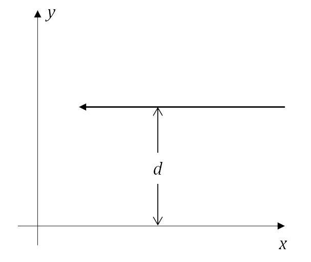

As leis Newtonianas da mecânica e da gravitação implicam que uma partícula de massa $m$, sujeita a um campo gravitacional gerado por um corpo de massa $M \gg m$, descreve um movimento restrito a um plano e caracterizado por coordenadas polares $(r(t),θ(t))$, que satisfazem $$ \frac{d\theta(t)}{dt} = \frac{L}{mr(t)^2} $$ e $$ \frac{m}{2}\left(\frac{d r(t)}{d t}\right)^2+U_{\text {efetiva }}(r)=E, $$ onde $L$ e $E$ (respectivamente o módulo do momento angular e a energia do sistema) são quantidades conservadas, e a energia potencial efetiva é dada por $$ U_{e f e t i v a}=-\frac{G M m}{r(t)}+\frac{L^2}{2 m r(t)^2}. $$ Na Relatividade Geral, embora a gravitação seja descrita de forma conceitualmente distinta da física Newtoniana, a equação fundamental que descreve o movimento de uma partícula de massa $m$ se movendo nas vizinhanças de um corpo central de massa $M \gg m$ pode ser escrita como na segunda equação, mas com a nova energia potencial efetiva: $$ U_{e f e t i v a}^{(R G)}=-\frac{G M m}{r(t)}+\frac{L^2}{2 m r(t)^2}-\frac{G M L^2}{m c^2 r(t)^3}. $$ O parâmetro $E$ ainda está associado (embora não seja igual) à energia do sistema e, junto com o momento angular $L$, são quantidades conservadas.
Tanto no caso newtoniano quando no relativístico, muitas características qualitativas do movimento podem ser entendidas simplesmente da análise do gráfico de energia potencial correspondente. Neste simulador, você pode comparar suas previsões qualitativas a partir da análise da energia potencial efetiva com o formato exato das órbitas, obtido a partir da integração numérica das equações de movimento!
O valor escolhido deve ser maior que o mínimo da energia potencial efetiva, calculado no passo anterior.
Para essa escolha de parâmetros, dois tipos de órbitas são possíveis. A órbita ligada será mostrada. Escolha o número de voltas que deseja traçar:
Escolha entre 1 e 20
1
20
As leis Newtonianas da mecânica e da gravitação implicam que uma partícula de massa $m$, sujeita a um campo gravitacional gerado por um corpo de massa $M \gg m$, descreve um movimento restrito a um plano e caracterizado por coordenadas polares $(r(t),θ(t))$, que satisfazem $$ \frac{d\theta(t)}{dt} = \frac{L}{mr(t)^2} $$ e $$ \frac{m}{2}\left(\frac{d r(t)}{d t}\right)^2+U_{\text {efetiva }}(r)=E, $$ onde $L$ e $E$ (respectivamente o módulo do momento angular e a energia do sistema) são quantidades conservadas, e a energia potencial efetiva é dada por $$ U_{e f e t i v a}=-\frac{G M m}{r(t)}+\frac{L^2}{2 m r(t)^2}. $$ Por outro lado, classicamente a luz não seria afetada pela gravitação.
Agora, a Relatividade Geral prevê que, nas vizinhanças de um corpo massivo, a trajetória de um raio de luz não será retilínea. O movimento, que está restrito a um plano, pode ser caracterizado por coordenadas polares $(r(\lambda), \theta(\lambda))$, que obedecem $$ \frac{d \theta(\lambda)}{d \lambda}=\frac{L}{r(t)^2} $$ e $$ \frac{1}{L^2}\left(\frac{d r}{d \lambda}\right)^2+V_{\text {efetivo }}(r)=\frac{1}{d^2} \text {, } $$ onde $$ V_{e f e t i v o}=\frac{1}{r^2}\left(1-\frac{r_s}{r}\right). $$ Aqui, $r_s=2 G M / c^2$ depende da massa do corpo central. Comparando com o caso clássico, vemos que o que cumpre o papel de parâmetro de “energia” é o fator $1/d^2$, onde $d$ é o parâmetro de impacto do raio de luz, que pode ser obtido a partir da sua energia $E$ e momento angular $L$ como $d=c|L/E|$. Para entender o significado do parâmetro de impacto, considere um raio de luz que vem de muito longe, se movendo paralelamente ao eixo-x: o parâmetro de impacto $d$ é justamente a distância ao eixo-x, como mostra a figura abaixo.
Tanto no caso clássico quando no relativístico, muitas características qualitativas do movimento podem ser entendidas simplesmente da análise do gráfico de energia potencial correspondente. Neste simulador, você pode comparar suas previsões qualitativas com base na análise do potencial efetivo com o formato exato das órbitas, obtido da integração numérica das equações de movimento!
Neste simulador, você deve inserir o valor do parâmetro de energia, $k \equiv 1/d^2$ (com $d$ em unidades de $r_s/2$). O programa retornará um gráfico correspondente à trajetória da partícula com esse parâmetro de impacto.
Este site foi elaborado a partir de um código em Python desenvolvido no trabalho de conclusão de curso (TCC) de Isabella Ramos de Souza Nunes, bacharel em Física pela Universidade Federal Fluminense, e sob a orientação da Prof.ª Dr.ª Raissa Fernandes Pessoa Mendes.
A construção do ambiente virtual a partir do código em Python foi realizada por Alessandro Lutterbach Veiga Gonçalves, licenciado em Física pela Universidade Federal Fluminense.
Links Úteis:


 Contextualização
Contextualização Funcionamento
Funcionamento